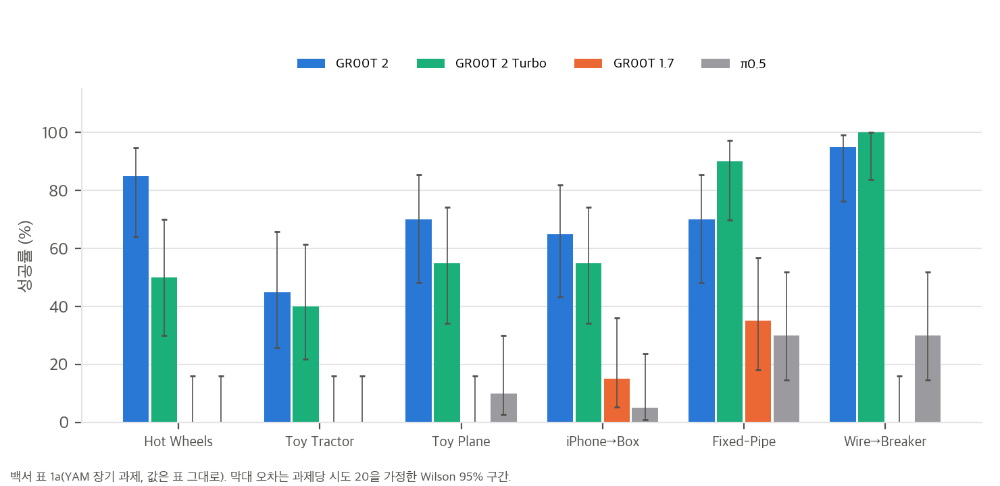
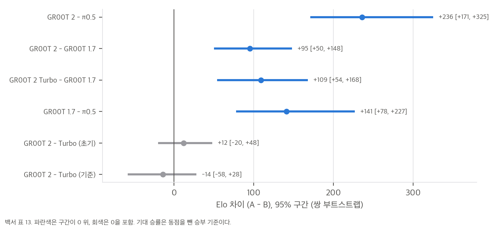
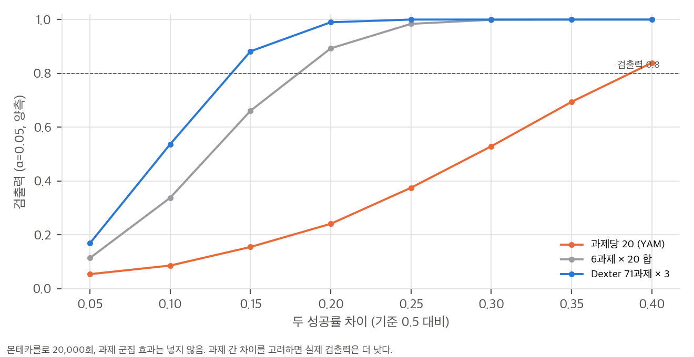
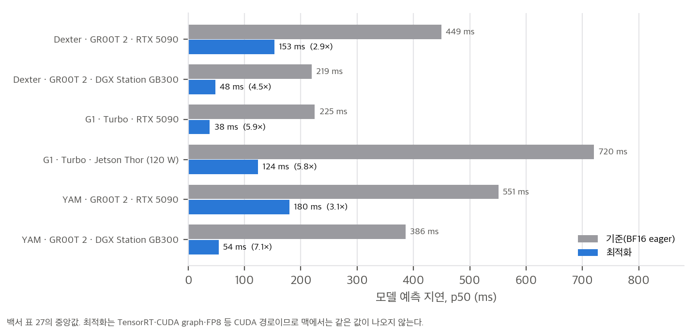

03 §1).03 §2.2, §2.4, §4.1).03 §2.6).03 §3).02 §4, 04 C21).04 §4).구현 판정 상세: 04 §4. 재계산 상세: 03.
GR00T 2: Scaling Robot Foundation Models for Generalization, Dexterity, and Adaptation (NVIDIA, 2026년 11월, arXiv 없음, 135쪽).
원문은 paper/paper.pdf(23.5 MB, 저작권 표기 "© 2026 NVIDIA. All rights reserved.")이고, 인용은 백서의 절(Sec.), 표(Tab.), 그림(Fig.) 번호로 합니다. 백서 본문은 paper/paper.txt에서 확인했습니다.
GR00T 2는 **비디오 확산 트랜스포머(Cosmos-Predict2.5-2B)를 그대로 가져와, 미래 영상과 로봇 행동을 한 시퀀스에서 함께 flow matching으로 예측하는 세계-행동 모델(world-action model, WAM)**입니다. 사람 영상(Human-1M 402k 시간), UMI 기구 시연(10k 시간), 원격조작 데이터(23.5k 시간)를 한 모델에 섞어 사전학습하고, 실물 강화학습과 프론티어 에이전트 연동을 더했습니다(Sec. 1, Sec. 2).
백서의 서론(Sec. 1)은 네 가지 진전을 내세웁니다.
추가로 GR00T 2 Turbo(더 작은 시각 잠재 표현을 쓰는 변형)를 소개하고, 휴머노이드 전신 제어에 쓴다(Sec. 2, Sec. 3.5).
| 구성 요소 | 백서의 설명 | 비고 |
|---|---|---|
| 백본 | Cosmos-Predict2.5-2B, "video diffusion transformer", 2B 파라미터 한 개 | 시각·행동·상태 토큰을 한 시퀀스에 넣음 |
| 영상 인코더 | Wan 2.1 VAE, 동결. 시간 4배, 공간 8배 압축 | 카메라 한 대 224×320, 프레임당 280 토큰 |
| 언어 | Cosmos-Reason1 VLM, 동결. 교차 주의로 읽음 | 크기는 백서에 없음 |
| 상태·행동 | 임베디드먼트별 작은 MLP 입출력 | 행동은 "노이즈가 섞인 행동 청크"로 입력 |
| 학습 목표 | flow matching, 영상과 행동에 각각 손실 | 사람 영상은 손 자세 궤적을 행동 감독으로 씀(Sec. 4.1) |
| 추론 | 영상 1–2 단계, 행동 2–4 단계 데노이징 | "2v4a" 같은 표기(Tab. 27 주석) |
| 입력 | 0.8초 이력, 5 fps, 카메라 최대 4대 | 머리 1대 + 손목 2대가 전형 (Sec. 2) |
Turbo는 같은 2B 트랜스포머에 Wan 2.2 VAE(공간 16배)를 써서 시각 토큰을 줄인 변형입니다(Sec. 2). 백서가 밝힌 Turbo 구조 차이는 VAE 하나와 입출력 투영뿐입니다.
| 출처 | 규모 (백서) | 역할 |
|---|---|---|
| Human-1M 필터 사람 영상 | 402,730 시간, 약 1,375만 에피소드 | 행동 없는 영상 학습 + 손 자세 감독 |
| 스튜디오 사람 영상 | 3,000 시간 | 로봇과 맞춘 시점, 같은 속도 |
| UMI-10K (손에 든 그리퍼) | 10,184 시간, 94.2만 에피소드 | 로봇 행동 표현으로 바뀐 시연 |
| 원격조작 | 23.5k 시간, 116만 에피소드 | YAM 18.7k, Sharpa 2.9k, Wuji 1.3k, G1 275 시간, DROID 350 시간 (Tab. 11) |
Tab. 11의 샘플 비중은 YAM 51.2%, ABC-130k 10.4%, Sharpa 20.6%, Wuji 14.0%, G1 1.3%, DROID 2.5%로 시간 비중과 다릅니다. 즉 샘플링 가중치로 균형을 맞춘 것입니다. 주석은 Flora(자체 데이터 엔진)가 달았고, WGO-Bench 시간 분할 F1 50.3으로 GPT-6 Astra(46.0)보다 높다고 보고합니다(Sec. 4.2.4).
백서는 두 종류의 평가를 씁니다.
| 주장 | 백서 수치 | 근거 |
|---|---|---|
| YAM 장기 6과제 평균 성공률 | GR00T 2 71.7%, Turbo 65.0%, π0.5 12.5%, GR00T 1.7 8.3% | Tab. 1a |
| Dexter 장기 7과제 평균 성공률 | GR00T 2 68.6%, Turbo 34.3%, GR00T 1.7 0.7%, π0.5 0.0% | Tab. 1b |
| Dexter 제로샷 71과제 | GR00T 2 49.8%, Turbo 36.6%, π0.5 26.3%, GR00T 1.7 18.3% | Tab. 3 |
| 사람 영상 사전학습 비율(0→100%) | Dexter 실물 성공률 18%→41% | Fig. 10 |
| 블라인드 Elo | 대 π0.5 +236 [171, 325], 대 GR00T 1.7 +95 [50, 148] | Tab. 13 |
| 시뮬레이션 벤치마크 | RoboCasa365 67.2%(VLA·WAM 중 최고), 에이전트 포함 88.0%; RoboDojo 에이전트 포함 75.8% | Tab. 19, Tab. 30 |
| 추론 지연 | Dexter 153 ms(RTX 5090), G1 Turbo 38 ms(RTX 5090) / 124 ms(Jetson Thor) | Tab. 27, Fig. 19 |
백서 결론(Sec. 5)은 다음 열린 문제를 적습니다.
02와 04에서 다룹니다.02 §4).| 세대 | 공개 시점 (확인) | 구조 (공개 자료 기준) | GR00T 2와의 차이 |
|---|---|---|---|
| GR00T N1 | 2025-06 (코드 태그 n1-release, 2025-06-11; arXiv 2503.14734) |
VLM + 확산 행동 헤드 (VLA) | 영상 예측 없음 |
| GR00T N1.5 | 2025-12-15 (n1.5-release) |
같은 계열, 동결 VLM 개선 | 영상 예측 없음 |
| GR00T N1.6 | 2026-04-15 (n1.6-release), HF GR00T-N1.6-3B |
같은 계열 | 영상 예측 없음 |
| GR00T N1.7 | 2026-04-18 (n1.7-release), HF GR00T-N1.7-3B (2026-11-10 갱신) |
VLM(Cosmos-Reason2-2B) + 32층 DiT 행동 헤드, 행동 호라이즌 40 (config) |
백서 주 비교 대상 "GR00T 1.7(VLA)" |
| GR00T 2 | 백서 2026-11 (코드 "12월 공개 예정") | Cosmos-Predict2.5-2B 기반 WAM, 영상과 행동 공동 flow matching | 아래 §3 |
백서는 GR00T 1.7을 "VLA", GR00T 2를 "WAM"으로 나눕니다(Sec. 2, Tab. 1). 두 모델은 같은 사후학습 레시피와 같은 데이터로 학습했다고 하며(Sec. 3.2, Tab. 4의 "모델 형식만 다름"), 이 대조가 백서의 핵심 비교입니다.
| 구성 | 백서의 인용 | 확인 방법 |
|---|---|---|
| 백본 비디오 DiT | Cosmos-Predict2.5-2B (NVIDIA et al., 2025a) | HF nvidia/Cosmos-Predict2.5-2B 존재 확인 (메타데이터만) |
| 영상 VAE | Wan 2.1 (Wan Team, 2025); Turbo는 Wan 2.2 | 백서 인용만 확인 |
| 언어 VLM | Cosmos-Reason1 (NVIDIA et al., 2025b) | N1.7 config는 Cosmos-Reason2-2B를 씀 (차이) |
| 사후학습 RL | GRPO (Shao et al., 2024), CPS 샘플링 (Wang and Yu, 2025), RTC (Black et al., 2025) | 인용만 확인 |
| 세계 모델 RL | DreamDojo (Gao et al., 2026) | 인용만 확인 (공개 여부 미확인) |
| 데이터 엔진 | Flora (Leng et al., 2026), WGO-Bench (Macrodata Labs, 2026) | 미공개 |
| 사람 데이터 | Human-1M, HF nvidia/PhysicalAI-Human-1M-100K (CC-BY-4.0) |
공개 100k 시간 부분집합만 (§4) |
| 원격조작 데이터 | ABC-130k (XDOF, 2026, HF XDOF/ABC-130k), DROID (Khazatsky et al., 2024) |
외부 공개 데이터 |
| 시뮬레이터 | Isaac Sim (Apache-2.0), IsaacLab-Arena, Newton, MuJoCo Warp | 공개 소프트웨어 |
| 기준 모델 | π0.5 (PI 2025), GR00T 1.7, FastWAM (Yuan 2026), MolmoAct2 (Fang 2026), FLUX 3 Action (Black Forest Labs 2026), LingBot-VA (Li 2026) | Tab. 1–3, 19 |
| 폴더 | 논문 | 관계 |
|---|---|---|
openwam/ |
OpenWAM (arXiv 2609.07398): 영상 생성 prior + ActionDiT | WAM 설계 선택을 부품 단위로 비교한 같은 계열. GR00T 2의 "영상 공동 예측"과 직접 비교 가능 |
agentic_wam/ |
AW-0 (arXiv 2610.30136): 영상과 행동을 한 Transformer에서 함께 denoise | 공동 생성 WAM의 다른 구현 |
thinkworld/ |
ThinkWorld (arXiv 2610.37666): 미래 예측 보조 손실 | 미래 예측을 보조 손실로만 쓰는 경우. GR00T 2는 생성 자체를 쓴다는 점이 다름 |
dreamx/ |
DreamX (arXiv 2611.05377) | 세계 모델과 정책 결합 |
pacevla/ |
PaceVLA (arXiv 2610.25961): GR00T N1.5 action expert 위에 decoder 4개 | GR00T 계열 VLA 확장 |
imle_vla/, adavla/, motion_latent_action/, uvt_visuomotor/ |
행동 생성기·잠재 행동 VLA | 행동 헤드 대안. GR00T 2는 행동 헤드를 영상 토큰과 같은 트랜스포머에 둠 |
ultra_humanoid/ |
ULTRA (arXiv 2603.03279): 휴머노이드 전신 제어 | GR00T 2 Turbo + SONIC 조합과 비교할 대상 |
restacvla/ |
ResTacVLA (arXiv 2607.03387) | 촉각 VLA. GR00T 2에는 촉각이 없음 |
| 자료 | 라이선스 | 별·좋아요 | 마지막 갱신 | 상태 |
|---|---|---|---|---|
백서 PDF (research.nvidia.com/labs/gear/gr00t-2/assets/gr00t2_whitepaper.pdf) |
© 2026 NVIDIA, All rights reserved (표지 쪽 하단) | — | 2026-11 (PDF 생성 2026-11-09) | 원문 135쪽, 23.5 MB |
프로젝트 페이지 research.nvidia.com/labs/gear/gr00t-2/ |
페이지 라이선스 표기 없음 | — | 2026-11 | 버튼: "Code Available in December" (코드 12월 공개 예정) |
| NVIDIA/Isaac-GR00T | Apache-2.0 | ★8,355, 포크 1,534 | 커밋 3b49067 2026-11-10 |
설명은 "N1.7". GR00T 2 코드·태그 없음. 최신 릴리스 n1.6.1-release(2026-04-23) |
HF nvidia/GR00T-N1.7-3B |
nvidia-open-model-license (other) |
♥188, 다운로드 58,508 | 2026-11-10 (sha 373d34e) |
공개 중. config는 analysis/meta/gr00t_n1d7_config.json |
HF nvidia/GR00T-N1.6-3B |
라이선스 미기재 | ♥93 | 2025-12-15 | 공개 중 |
HF nvidia/PhysicalAI-Human-1M-100K |
CC-BY-4.0 | ♥40, 다운로드 5,447 | 2026-11-07 (sha 7e312e6) |
100,000 시간 공개 부분집합, 3,405,573 에피소드 |
HF GR00T 2 모델 (nvidia/GR00T-2*, nvidia/GR00T-N2*) |
— | — | 검색 결과 없음 | 공식 가중치 없음 (커뮤니티 GR00T-2 이름 저장소는 모두 비공식) |
| arXiv 제목 검색 "GR00T 2" | — | — | — | 0건 (2026-11-12) |
메타데이터 수집: analysis/fetch_meta.py → analysis/meta/gr00t2_meta.json.
공개 상태 판정: 2026-11-12 기준으로 GR00T 2의 가중치, 학습·추론 코드, 데이터 레시피는 공개되지 않았습니다. 프로젝트 페이지의 "Code Available in December"가 가장 최근 공식 일정입니다. 백서 Tab. 13 주석의 "released checkpoint"는 이 상태와 맞지 않아 04에서 불일치로 적었습니다.
analysis/meta/gr00t_n1d7_config.json(2 KB)에서 가져온 값과 백서 값을 나란히 놓았습니다. 두 모델은 다른 아키텍처이며, 같은 축에서 비교만 합니다. 어느 쪽도 실행하지 않았습니다.
| 항목 | GR00T N1.7 (공개 config) | GR00T 2 (백서) |
|---|---|---|
| 모델 이름 | Gr00tN1d7 |
(이름 미정, 백서 본문은 "GR00T 2") |
| 언어·시각 백본 | model_name: nvidia/Cosmos-Reason2-2B, tune_llm: true, tune_visual: true (미세조정) |
Cosmos-Reason1(동결), 영상 DiT는 학습 |
| 중간층 | select_layer: 16, use_vl_self_attention 4층 |
영상과 행동 토큰이 한 시퀀스 |
| 행동 헤드 | DiT 32층, 헤드 32개 × 48차원, output_dim 1024 |
같은 트랜스포머의 행동 토큰(출력 디코더는 임베디드먼트별) |
| 행동 호라이즌 | action_horizon: 40 |
백서에 일반값 없음. 설정마다 다름 (UMI 직접 학습은 48스텝 중 30 실행, App. E.2; DexUMI 후처리는 40스텝 stride 2, App. E.5) |
| 추론 단계 | num_inference_timesteps: 4 |
영상 1–2, 행동 2–4 |
| 입력 해상도 | image_target_size: [256, 256] (잘라내기 230) |
224×320, 카메라 최대 4대 |
| 임베디드먼트 수 | max_num_embodiments: 32, max_action_dim: 132 |
임베디드먼트별 MLP(Sec. 2), 수는 백서 미기재 |
| 정밀도 | dtype: bfloat16, use_flash_attention: true |
BF16 학습, 서빙은 TensorRT·FP8 (Sec. 4.6.1) |
| 학습 목표 | 행동 flow matching | 영상 + 행동 flow matching |
| 파라미터 수 | 이름에 3B | 백서는 "2B-parameter transformer" |
읽는 법: GR00T 2는 N1.7의 "VLM + 행동 헤드" 구조를 버리고, 영상 생성 백본 하나로 행동까지 생성합니다. 그래서 N1.7 config의 tune_llm, select_layer 같은 항목은 GR00T 2에 대응하는 값이 없습니다.
| 데이터 | 백서 규모 | 공개 상태 |
|---|---|---|
| Human-1M 사전학습 필터본 | 402,730 시간 | 미공개 (필터 기준과 목록은 App. C.1) |
| Human-1M 100K 공개 부분집합 | 100,000 시간 (HF, CC-BY-4.0) | 공개 |
| 스튜디오 사람 데이터 3,000 시간 | — | 미공개 |
| UMI-10K | 10,184 시간 | 미공개 (백서 App. C.2에 통계만) |
| 원격조작 (YAM, Sharpa, Wuji, G1) | 23.5k 시간 | 대부분 미공개. ABC-130k(XDOF)는 HF 공개 |
| 평가 원자료 (A/B 아레나, 실물 시도 로그) | 16,044 롤아웃 | 미공개 (집계 표만) |
openwam/, agentic_wam/의 분석 참조).03 §4).이 문서의 수치는 백서 표·본문에 적힌 값을 그대로 가져와 다시 계산한 결과입니다. 원자료가 없으므로 백서가 보고한 집계를 검산하는 수준이고, 개별 시도 결과를 재현한 것은 아닙니다. 계산 스크립트는 analysis/paper_checks.py(→ paper_checks_results.json), analysis/toy_power_fit.py(→ toy_power_fit_results.json)입니다. 그래프는 report/figures/에 있습니다.

직접 그린 그래프: 표 1a의 과제별 성공률과 Wilson 95% 구간(과제당 시도 20 가정). 막대 값은 백서 표 그대로.
YAM 6과제, Dexter 7과제 평균을 다시 계산했습니다. 모든 평균이 보고값과 소수 첫째 자리까지 일치합니다.
| 모델 | YAM 진행률 (계산/보고) | YAM 성공률 (계산/보고) | Dexter 진행률 (계산/보고) | Dexter 성공률 (계산/보고) |
|---|---|---|---|---|
| GR00T 2 | 81.28 / 81.3 | 71.67 / 71.7 | 86.57 / 86.6 | 68.57 / 68.6 |
| GR00T 2 Turbo | 77.93 / 77.9 | 65.00 / 65.0 | 62.00 / 62.0 | 34.29 / 34.3 |
| GR00T 1.7 | 22.60 / 22.6 | 8.33 / 8.3 | 22.00 / 22.0 | 0.71 / 0.7 |
| π0.5 | 28.83 / 28.8 | 12.50 / 12.5 | 21.29 / 21.3 | 0.00 / 0.0 |
민감도: Dexter 트럭 조립(Truck Assembly)에서 GR00T 2의 65%는 "더 쉬운 새 시작 장면"의 값입니다. 원래 장면에서는 20회 중 7회(35%)였다고 본문이 밝힙니다(Tab. 1 주석). 원래 장면 값을 넣으면 Dexter 평균 성공률은 68.6%에서 **64.3%**로 내려갑니다(-4.3%p). 표의 평균이 쉬운 장면 값에 기대고 있다는 뜻입니다.
| 항목 | 계산 | 본문 |
|---|---|---|
| YAM 캠페인 | 78 + 122 − 5 (두 리그에 걸친 5개) = 195 | 195 ✓ |
| YAM 롤아웃 | 6,373 + 9,671 = 16,044 | 16,044 ✓ |
| YAM 시도 | 2,167 + 3,403 = 5,570 | 5,570 ✓ |
| YAM 쌍 비교 | 5,732 + 6,035 = 11,767 | 11,767 ✓ |
| YAM 체크포인트 | 45 + 26 = 71 | 71 ✓ |
| 동점 비율 | 5,732 × 30% = 1,720; 6,035 × 35% = 2,112 | 표 12의 30%, 35% |
집계는 모두 맞습니다. 다만 V1과 V2는 서로 다른 리그라고 백서가 밝혔는데(표 12 주석), 본문 4.3은 두 리그를 합쳐 "71개 체크포인트"라고 씁니다. 합계의 의미는 "두 리그의 독립 집계를 더한 것"입니다.
| 행 | 기준 (ms) | 최적화 (ms) | 계산 배율 | 보고 배율 |
|---|---|---|---|---|
| Dexter GR00T 2, RTX 5090 | 449.20 | 152.78 | 2.94 | 2.94 |
| Dexter GR00T 2, GB300 | 219.02 | 48.47 | 4.52 | 4.52 |
| G1 Turbo, RTX 5090 | 224.73 | 38.40 | 5.85 | 5.85 |
| G1 Turbo, Jetson Thor | 720.41 | 123.97 | 5.81 | 5.81 |
| YAM GR00T 2, RTX 5090 | 550.96 | 179.79 | 3.06 | 3.06 |
| YAM GR00T 2, GB300 | 386.06 | 54.00 | 7.15 | 7.15 |
모든 배율이 맞고, 본문의 "2.9배에서 7.2배"도 맞습니다. 다만 기준은 BF16 eager PyTorch, 최적화는 TensorRT·CUDA graph·FP8이라서, 배율은 소프트웨어 경로 차이를 함께 담고 있습니다. 맥에서 얻을 수 있는 값은 아닙니다(§4).
Wilson 95% 구간 예시: 20회 중 17회 성공 → [64.0%, 94.8%], 10회 → [29.9%, 70.1%], 14회 → [48.1%, 85.5%]. 과제당 20회에서는 ±20%p가 흔한 불확실성입니다.
두 비율 검정, 양측 α = 0.05, 검출력 0.8 기준으로 계산했습니다.
| 비교 | 계산 (쪽당 표본) | 백서 | 판정 |
|---|---|---|---|
| 95% 대 99% | 284.3 | "약 285" | ✓ |
| 99% 대 99.9% | 1,058.9 | "1,000 이상" | ✓ (1,059) |

직접 그린 그래프: 표 13의 쌍별 Elo 차이와 95% 구간. 회색은 0을 포함하는 비교.
| 항목 | 계산 | 결과 |
|---|---|---|
| 사람 데이터 시간 | 402,730 h / 13.75M 에피소드 = 1.76 분/에피소드 | HF 공개 부분집합 100,000 h / 3,405,573 = 1.76 분 ✓ 같은 종류의 데이터로 보임 |
| 시간 단계 | (402,730 + 10,184 + 23,500) h × 3600 × 30 Hz = 47.1 × 10⁹ | 백서 462억(46.2 × 10⁹), 2% 차이. 필터 전후 차이로 설명 가능 ✓ |
| 전역 배치 | 1,024 GPU × 16 = 16,384 창 | 백서는 GPU당 배치 16 (Sec. 4.7.1) |
| 스텝 시간 (가정) | 16,384 / 12,000 창/초 ≈ 1.37 s | 데이터 대기가 0.049%라서 로더 전달율 ≈ 소비율이라는 가정 |
| 계산량 (가정) | 학습 FLOP ≈ 6 × 2×10⁹ × 16,384 × T (창당 토큰 T) | T = 1,000 / 2,000 / 4,000이면 스텝당 1.97 / 3.93 / 7.86 × 10¹⁷ FLOP, 1,024장 피크 2.5 PF 기준 MFU 5.6% / 11.3% / 22.5% |
| 가중치 메모리 | 2B 파라미터 DiT: BF16 3.73 GiB, FP8 1.86, FP4 0.93 | 가중치만. 동결 VAE·VLM 크기는 백서에 없음 |
계산량 줄은 가정치의 범위입니다. 백서는 토큰 수, 스텝 수, MFU를 보고하지 않으므로, 총 GPU 시간은 여기서 확정할 수 없습니다. 스텝 수가 없으면 학습 기간과 총 GPU 시간은 계산되지 않습니다. 위 범위는 스텝당 계산량의 크기만 보여 줍니다. 이 추정은 확정 주장으로 쓰지 않습니다.

직접 그린 그래프: 시도 수별 두 비율 검정 검출력(몬테카를로, 과제 군집 미포함).
analysis/toy_power_fit.py, 몬테카를로 20,000회, 시드 0, 1스레드 0.1초)기준 성공률 0.5, 두 비율 양측 검정 α = 0.05.
| 시도 수 (쪽당) | 차이 10%p | 차이 20%p | 차이 30%p |
|---|---|---|---|
| 20 (과제당, YAM) | 0.09 | 0.25 | 0.53 |
| 120 (6과제 × 20 합) | 0.33 | 0.89 | 1.00 |
| 213 (Dexter 제로샷) | 0.54 | 0.99 | 1.00 |
| 216 (사람 영상 비율 실험, 실물) | 0.55 | 0.99 | 1.00 |
analysis/toy_power_fit.py의 둘째 부분)
직접 그린 그래프: 표 27의 지연 시간 중앙값과 배율. 최적화 경로는 CUDA 전용이다.
백서 값(RTX 5090)에서 출발한 자릿수 추정입니다. 정확한 값은 공개 가중치로 측정해야 합니다.
이 수치들은 04 §4의 판정에 쓰지만, 측정 결과처럼 인용하지 않습니다.
| 점검 | 결과 |
|---|---|
| 표 1·3·11·12·27 재계산 | 모든 평균·합계·배율 일치. 표 1b는 트럭 과제의 쉬운 장면 값을 감안해 읽어야 함 |
| 통계 주장 | Fisher p = 0.12 ✓, 95 대 99% 표본 285 ✓, Elo 기대 승률 ✓. Turbo의 YAM 차이는 구분 안 됨 |
| 주장 해석 | "80% 승률"은 동점 제외. 엄격한 승률은 약 52% |
| 시도 수 | 과제당 20회 → 20%p 차이 검출력 0.25. 백서의 결론 중 작은 차이를 말하는 부분은 근거가 약함 |
| 공개 수치의 불일치 | 과제 수 71 대 72, RoboCasa 평균 가중치 미공개, 구간 90% 대 95% |
| 계산 자원 | 총 GPU 시간·스텝 수·MFU 미보고. 추정치만 가능 |
스크립트: analysis/extra_elo_bootstrap.py → analysis/extra_elo_bootstrap_results.json (numpy, CPU, 실행 74초). 백서 실물 데이터는 공개되지 않아 모든 값은 합성입니다. 백서 방식(부록 D.4)의 집계를 흉내 낸 것이며, 백서 수치를 재현한 것이 아닙니다.
목적. 쌍 비교 Elo의 95% 구간 폭이 과제 수와 과제당 시도 수에 따라 어떻게 줄어드는지 보고, 동점을 반 승으로 셀 때와 버릴 때 결과가 어떻게 다른지 봅니다. 백서 표 13의 +236(π0.5 대)이 백서 규모에서 구분되는지도 봅니다.
설정(가정).
결과 1: 구간 폭과 과제 수 (K = 26, σ = 100 Elo, GR00T 2 대 π0.5 구간 폭, Elo)
| 과제 수 T | 동점 반 승 | 동점 버림 |
|---|---|---|
| 4 | 118 | 242 |
| 8 | 96 | 164 |
| 16 | 79 | 135 |
| 24 | 62 | 101 |
| 38 | 56 | 86 |
| 64 | 40 | 65 |
결과 2: 백서 규모(T = 38, K = 26)에서 구분 가능성과 점추정
| 설정 | 점추정 평균, 반 승 | 점추정 평균, 버림 | 참값 | 236 구간이 0을 제외한 비율 (반 승 / 버림) | 구간이 236을 포함한 비율 (반 승 / 버림) |
|---|---|---|---|---|---|
| σ = 0 | 149 | 236 | 236 | 1.00 / 1.00 | 0.00 / 1.00 |
| σ = 100 | 128 | 204 | 236 | 1.00 / 1.00 | 0.00 / 0.65 |
결과 3: 백서 구간 폭과의 대응. 백서 표 13의 구간 폭은 π0.5 대 154, GR00T 1.7 대 98입니다(반폭 약 50–80). 이 합성 설정(K = 26, 동점 반 승)에서 σ = 100이면 GR00T 2 대 π0.5 폭 154는 T = 4(118)보다 넓어서 과제 4개 미만에 해당합니다. GR00T 1.7 폭 98은 T = 8(108)과 T = 16(79) 사이, 약 10개입니다. σ = 150이면 π0.5 폭 154가 T = 4(159) 부근입니다. 즉 백서 구간 폭은 과제 38개를 모두 쓴 쌍이라면 너무 넓고, 쌍별로 유효 과제가 적었다면 맞습니다. 백서는 쌍별 과제 수와 과제 목록을 공개하지 않으므로 어느 쪽인지 확인할 수 없습니다.
해석.
한계.
GR00T 2의 공식 코드와 가중치는 2026-11-12 기준 공개되지 않았습니다(02 §4). 그래서 코드 대조(논문 ↔ 코드)는 할 수 없고, 이 문서는 (1) 백서 주장을 백서 자체 수치로 다시 계산하고 (2) 공개된 N1.7 config와의 정적 대조만 합니다. 어떤 코드도 실행하지 않았고, 가중치는 받지 않았습니다.
판정 기호: 재현됨(산술·집계가 맞음) / 부분(일부만 맞거나 해석이 넓음) / 불일치(본문과 표·다른 부분이 어긋남) / 검증 불가(원자료·코드·가중치 없음).
| # | 주장 (백서 위치) | 검증 방법 | 판정 | 근거 |
|---|---|---|---|---|
| C1 | 구조: Cosmos-Predict2.5-2B 백본, 2B 파라미터 트랜스포머, 영상 VAE·VLM 동결 (Sec. 2) | 공개 코드·가중치 없음. 공개 N1.7 config와 대조 | 검증 불가 | 02 §5. N1.7은 다른 구조(VLM + DiT 헤드) |
| C2 | Dexter 제로샷 성공률 49.8% (71과제, 3회) (Tab. 3) | 213 정수 횟수 확인 | 재현됨 (산술) | 03 §1.2. 과제 수 71과 72 불일치(App. A.2) |
| C3 | 본문의 제로샷 "40%, 50과제, 1회 시연 71%, 5회 95%" (Sec. 3.1, Fig. 2) | 과제당 시도 수가 없음 | 검증 불가 | Fig. 2 주석 "per task" 없음. 5회 95%는 "과제 중 80% 이상 학습된 50과제"로 고른 값이라 선택 편향 (Sec. 3.1 본문이 인정) |
| C4 | YAM 장기 평균 GR00T 2 71.7%, Turbo 65.0%, 차이 6.7점 (Tab. 1a, Sec. 5) | 평균 재계산 | 재현됨 (평균). 차이는 부분 | 평균 일치. 차이 6.7%p의 표준오차 약 5.5%p → 구분 안 됨 (03 §2.2) |
| C5 | Dexter 장기 GR00T 2 68.6%, Turbo 34.3% (Tab. 1b) | 평균 재계산 | 재현됨, 해석 부분 | 트럭 과제 쉬운 장면 값 감안 시 64.3% (03 §1.1) |
| C6 | 사람 영상을 0→100% 늘리면 실물 성공률 18→41%, "두 배 이상" (Sec. 4.2.1, Fig. 10) | 216 per arm 계산, 비율 | 재현됨 (산술). 일반화는 부분 | 2.3배 맞음. 학습 시드 반복과 과제 군집 효과 없음 (03 §2.7) |
| C7 | 0·1·10·100% 전 구간에서 "positive scaling", "포화되지 않음" (Fig. 10) | 중간 점 값 확인 | 부분 | 4개 점만. 곡선 모양을 말하기 약함 |
| C8 | π0.5 대비 Elo +236 [171, 325], "80% 승률" (Tab. 13, Sec. 4.3) | Elo → 승률 계산 | 재현됨 (Elo식). "승률"은 부분 | 79.6%는 동점 제외. 동점 35%를 포함한 엄격한 승률은 약 52% (03 §2.6) |
| C9 | GR00T 1.7 대비 Turbo 대 GR00T 2는 "statistically indistinguishable" (Sec. 4.3) | Elo 구간 확인 | 재현됨 | 구간 [-20, +48]이 0을 포함 |
| C10 | 아레나 규모: 195 캠페인, 16,044 롤아웃, 11,767 쌍 비교, 71 체크포인트 (Sec. 4.3, Tab. 12) | 표 12 집계 합산 | 재현됨 | 03 §1.3 |
| C11 | 시뮬레이션과 실물 상관 r = 0.93 (14 체크포인트), "95–99% of a perfect simulator" (Sec. 4.5.2) | Fisher 구간 계산 | 부분 | 구간 [0.79, 0.98]. 완벽한 시뮬레이터 상한은 계산 불가 |
| C12 | 추론 지연 153 ms (Dexter, RTX 5090), 124 ms (Turbo, Jetson Thor), 2.9–7.2배 가속 (Sec. 2, 4.6.1, Tab. 27, Fig. 19) | 표 27 배율과 Fig. 19 비율 계산 | 재현됨 (배율) | 기준 BF16 eager vs TensorRT·FP8(CUDA 경로). 맥의 값이 아님 (03 §1.5) |
| C13 | RoboCasa365 67.2%가 VLA·WAM 중 최고, 에이전트 포함 88.0%가 리더보드 1위 (Sec. 4.5.4, Tab. 19) | 표 19 행 비교 | 부분 | 표 안에서는 1위(88.0 대 HexaShell 1.5의 85.6). 그러나 HexaShell은 에이전트이고 GR00T 2 행은 저자 실행. 평균이 과제 가중치라 재계산 불가(03 §2.9) |
| C14 | RoboDojo 75.8% (에이전트 + RL)가 최고 (Sec. 3.4, Tab. 19) | 표 19 행 비교 | 부분 | Q0-Preview 68.9 대비 1위. 공식 3개 레이아웃 뱅크 중 bank 0만 사용. 공식 SFT 35.5%에서 SFT 35.2(bank 0) |
| C15 | 사전학습 사람 데이터 402,730 h, 원격조작 23.5k h, UMI 10,184 h (Sec. 4.2) | 표 11 합계, 시간 단위 계산 | 재현됨 (합계). 원자료 검증 불가 | 1.76분/에피소드, 30 Hz 프레임 수 2% 차이 (03 §3) |
| C16 | 사전학습은 GB300 1,024장 (Sec. 4.7.1) | 데이터 로더 수치 (Tab. 35)와 계산량 가정 | 부분 | 장 수는 명시. 총 스텝, 기간, GPU 시간, MFU 미보고 (03 §3) |
| C17 | 실물 장기 조립 97% 이상 (에이전트, Fig. 7) | 100회 시도 표기 확인 | 부분 | 100회 표기는 맞음. 사람이 도운 시도는 실패로 셈(좋은 설계). 시도 로그는 공개 안 됨 |
| C18 | 블라인드 A/B 프로토콜: 체크포인트 순서 무작위, 작업자 블라인드 (Sec. 4.3, App. D) | 설명 확인 | 검증 불가 | 작업자 블라인드 여부는 원자료 없이 확인 불가 |
| C19 | Elo 재적합이 발표된 값을 0.1 이내로 재현 (App. D, Tab. 13 주변) | — | 검증 불가 | 원자료 없음 |
| C20 | H.3: WAM이 시뮬레이션 데이터를 더 잘 쓴다 (63.3% 대 40.0%) | Fisher 검정 | 부분 (백서도 "suggestive") | p = 0.12. 결론은 약함 (03 §2.4) |
| C21 | "GR00T 2 is the released checkpoint" (Tab. 13 주석) | HF·GitHub·프로젝트 페이지 확인 | 불일치 | 2026-11-12 기준 HF GR00T 2 저장소 없음. 프로젝트 페이지는 "Code Available in December" |
| C22 | 백서 PDF 라이선스 | 표지 쪽 하단 | — | "© 2026 NVIDIA. All rights reserved." (README 라이선스 절) |
이 맥에서 GR00T 2를 "공개 가중치로" 구현하는 것은 지금 불가능합니다. 가중치와 코드가 없습니다. 공개 예정일(12월) 이후에도 아래 조건을 충족해야 합니다.
| 작업 | 이 맥에서 | 필요한 것 (백서·공개 자료 기준) | 판정 |
|---|---|---|---|
| 공개 가중치 다운로드 후 추론 (제로샷) | 메모리는 충분(가중치 DiT 약 3.7 GiB BF16, VLM·VAE 포함해도 약 8–9 GiB 추정). 지연이 문제: 153 ms(5090)에서 맥은 수 초 단위로 추정 | 공식 서빙은 TensorRT·FP8·CUDA graph 경로라 맥에서 같은 경로는 없음. eager BF16 PyTorch 경로가 MPS에서 도는지 미확인 | 조건부 (공개 후, 지연 측정 필요). 실시간 제어는 부적합, 오프라인 평가·라벨링 정도 |
| 이미지·영상 입력 처리 (Wan VAE, Cosmos 토크나이저) | 메모리 가능 | CUDA 커널 의존 여부 미확인 | 미확인 |
| LoRA 미세조정 (백서: 과제당 약 30분, RTX 5090) | 맥에서 BF16 학습은 MPS 지원 범위 확인 필요. 같은 비율을 적용하면 약 5–12시간 (추정) | RTX 5090급 CUDA GPU 1장이 백서의 설정 | 비추천 (시간과 안정성). 이 맥에서 하면 시험용 소규모만 |
| 실물 로봇 수준 데이터로 전체 사후학습 | 불가 | 대규모 원격조작과 실물 | 불가 |
| 사전학습 재현 | 불가 | GB300 1,024장, 원자료 미공개 | 불가 |
| 아레나·시뮬레이션 평가 재현 | 불가 | L40급 GPU, 시뮬레이터(IsaacLab 등) | 불가 (GPU 재현 금지 규칙) |
이 맥에서 GR00T 2는 지금은 구현할 수 없습니다(가중치·코드 미공개). 12월 공개 후에도 추론은 조건부(메모리는 되지만 CUDA 전용 최적화 경로가 없고 지연이 수 초로 추정), 미세조정은 비추천(RTX 5090급 GPU 권장), 사전학습과 RL·아레나 재현은 불가입니다.
| 항목 | 백서 | 공개 자료 | 판정 |
|---|---|---|---|
| 가중치 | 언급 없음 (Tab. 13 주석만 "released") | HF GR00T 2 없음 | 불일치 (C21) |
| 코드 | 프로젝트 페이지 "Code Available in December" | Isaac-GR00T는 N1.7까지 | 미공개 |
| 라이선스 | 백서 표지 "All rights reserved" | Isaac-GR00T Apache-2.0, N1.7 가중치 nvidia-open-model-license | 확인 불가 (GR00T 2 해당 없음) |
| 사람 데이터 | Human-1M 402k h 사전학습 | HF 100k h 공개(CC-BY-4.0) | 부분 공개 |
| 평가 데이터 | 아레나 16,044 롤아웃 | 없음 | 검증 불가 |